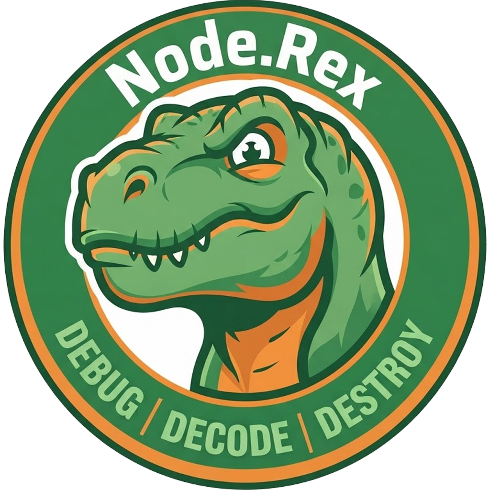
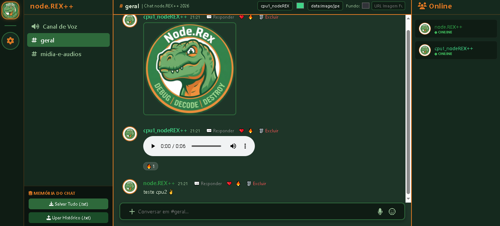
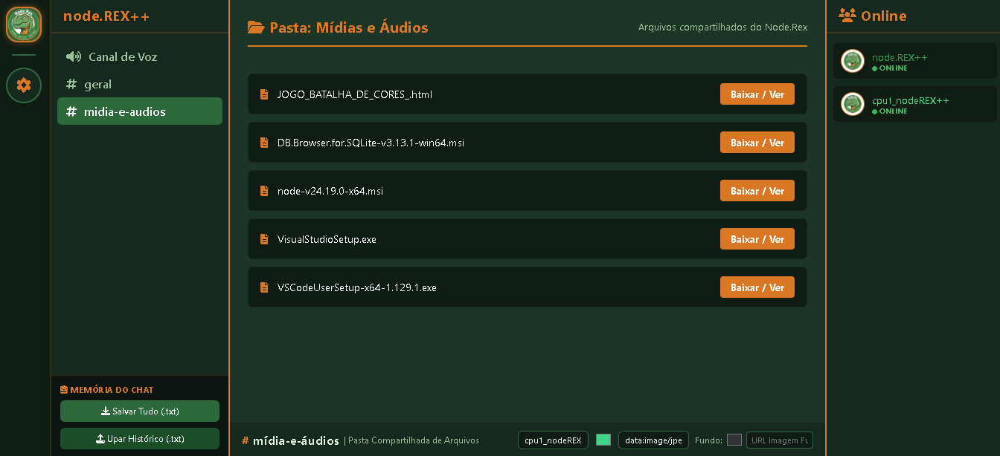
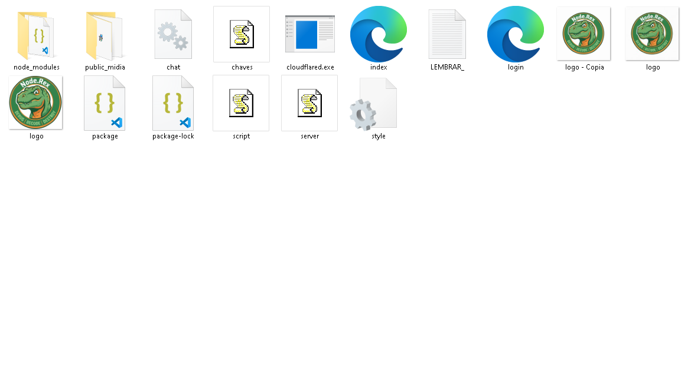

// debug | decode | destroy
O node.REX++ é uma proposta de chat portátil que cabe em um pendrive de 1 GB e pesa menos de 500 MB. Ele foi feito para conversar com amizades de confiança sem a necessidade de cadastros, registros, envio de documentos de identidade ou biometria facial. O objetivo principal é blindar a sua privacidade e dar a você o controle total do seu próprio espaço. Basta baixar os arquivos, mudar as regras e construir tudo do seu jeito. Criado com a ajuda da IA Gemini e desenvolvido com o auxílio do Notepad++, o projeto nasceu com a proposta de ser um espaço seguro para brincar e conversar com amigos íntimos, jogar, rir, zoar e ter um cantinho particular só de vocês. Sinta-se livre para melhorar e modificar o código da forma que melhor atender às suas necessidades.
⚠️ Aviso Importante: Antes de baixar ou utilizar, leia atentamente os Termos de Uso e Isenção de Responsabilidade.
O conteúdo são o conjunto de Arquivos para criar o Chat (Passo 1: Arquivos e Nomes)
Dentro da Pasta onde estão os Arquivos você digita CMD ou PowerShell (Passo 2: Terminais)
Baixe o pacote atualizado para testar no seu ambiente:
📦ESTÁ DISPONÍVEL O ARQUIVO NODEREX_SERVIDOR.rar
<11 Set 2026, 14:51hs>
<14 Set 2026, 04:02hs>
<12 Set 2026, 07:19hs>
<11 Set 2026, 21:01hs>
Orientação visual do Chat Online em CMD <node server.js>

Legenda: Print real do nodeREX Online

Legenda: Pasta Pública para compartilhar

Legenda: Imagem para Noção Básica dos Arquivos e de como deve ficar